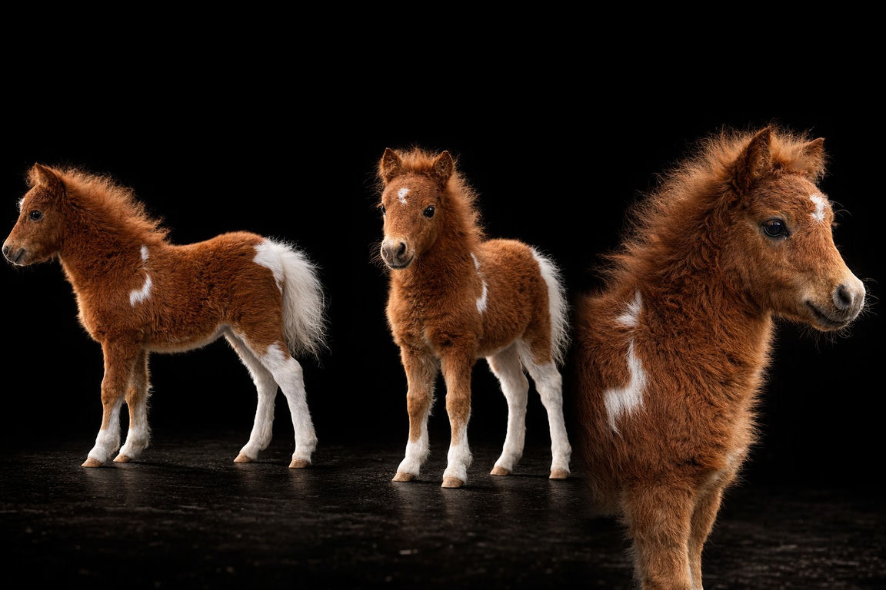
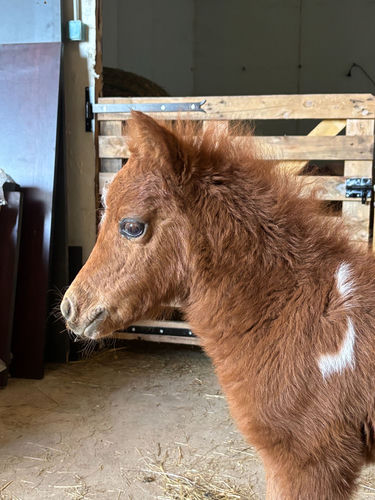

Scarlett de l'Arche du Négadis
Une Pouliche Miniature AMHA d'Exception
Issue du mariage entre notre étalon d'élite Macchiato et la jument Kadence, Scarlett incarne la synthèse parfaite entre robustesse élégante et raffinement de pur-sang arabe en réduction. Une naissance rare, pensée pour l'excellence.




Scarlett
de l'Arche du Négadis
Pouliche · Née mars 2026 · Pie Alezan
Née d'un mariage de prestige entre Macchiato de l'Arche — notre étalon à l'allure de pur-sang arabe — et la jument Kadence de lignée paysanne, Scarlett est le fruit d'une sélection pensée pour l'excellence morphologique et comportementale.
Dès ses premiers jours, elle se démarque par un port de tête altier, une queue fièrement relevée, et des allures d'une amplitude rare pour sa taille. Elle a également hérité du regard mystérieux de son père : de magnifiques éclats de bleu dans les yeux, une signature unique et inoubliable.
Les Parents de Scarlett

Macchiato de l'Arche
Étalon d'élite · Standard AMHA/AMHR · Allures pur-sang arabe · Éclats bleus dans les yeux · ACAN N/N
Voir la fiche complète
Kadence
Jument de caractère · Lignée Paysanne · Robe pie alezan · Excellent tempérament · ACAN N/N
Voir la fiche complète